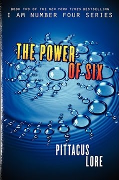
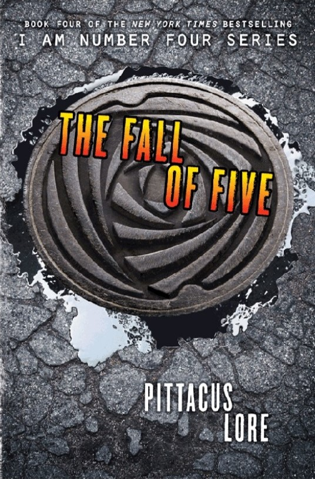

BOOKS
NOVELS






NOVELLAS


“'And even if we were hunting vampires, what the hell is the Silly Putty for?'”
- Number Four
“'I wouldn't of missed a second of it, kiddo. Not for all of Lorien. Not for the whole damn world.'”
- Henri

“‘Where are you originally from?’
‘The planet Lorien, three hundred million miles away.’
‘Must have been a long trip, John Smith.’
‘Took almost a year. Next time I’m bringing a book.’”
- Number Four talking to FBI Agent
“'Are you sure you want us to keep calling you "Six"?'
'You can say it's short for something.'
'For what? Sixty?'”
- Sam Goode to Six

“'Why couldn't you turn into a fireball when we were on the same team!'”
- Nine
“She narrows her eyes and arranges her face in the most intimidating glare she has.
‘Do you know what happens to kids like you in prison?’ she asks.
‘They escape? Like I did last time?’”
- Agent Walker and Number Four

“'Aliens,' mutters Sarah jokingly. 'You need to get out more.'”
- Sarah
“'Alright Adam, you're gonna help me win this war.'”
- Number Four

“'The General is my father.'
'You’re kidding me.'
'No. We don’t exactly get along.'
'Are you going to…' I don’t even know how to phrase this. 'Will you be able to…?'
'Fight? Kill? Yes. Show him no mercy, because he won’t show any to us?'
'Your own father, man? I mean, even for a Mogadorian, that’s pretty cold.'
'At this point, defeating him in battle is likely the only way he’ll ever feel pride for me,' Adam replies, adding weakly, 'not that I care.'
I shake my head. 'You guys are so screwed up.'”
- Adam and John
“Sam shakes his head, still marveling at the hulking warship.
'So they have a secret weakness right? Like how you can shoot that one spot on the Death Star and the whole thing blows up?'
Adam's brow furrows. 'What's a Death Star?'
Sam throws up his hands. 'We're screwed.'”
- Sam and Adam
“Five swoops down, flames extinguished. Instead of going in for another strike, Five catches Nine by the wrist in midair. He lowers him gently to the ground. In response, Nine punches him right in the face. Because of course he does.”
“'So, that’s what decided that nerdy Sam Goode should get superpowers and that I . . .' Mark trails off, grimacing. 'S**t. I should’ve been nicer in high school.'”
- Mark James

“'I’m going to visit Sam next.'
'Tell him to call his mother!' Malcolm says with a shake of his head.
'And tell him he needs to come home eventually and finish high school or he’ll never get into a good college.
There’s a limit to how much vacation a young man should be allowed to take, no matter how many planets he’s helped saved.'”
- Number Four and Malcolm Goode
“'Ella, guys,' I say to the air, hoping someone is telepathically listening in. 'We’re coming.'
Outside, dawn is just beginning to break.”
- Six


“'You've always known that I would die for you. That I would die for Lorien.'”
- Sandor, Nine's Legacy
“'One day, you will take your place among them as a great hero to our people. You will be known as the One who protected the Eight.'”
- Hilde, The Fallen Legacies


“'You're forgetting me.'”
- One, The Search for Sam
“Without even knowing how I did it, I took the power that one had given me and brought a whole government base crashing down to it foundations.”
- Adam, The Fallen Legacies


“John and Sam. They've escaped.
That didn't take long.”
- Mark, Return to Paradise
“I killed my only friend.
I curse him. Because he recruited me, and befriended me, and made me care about him, and then let me kill him.
Because he’s not here anymore to guide me and probably had nothing to do with the attack on the base if he sacrificed himself for my ascension.
And because if he’d just told me he knew what was really going on when I showed up at the beach house, we could have figured something else out.”
- Five, Five's Betrayal


“She stares at BK and mutters something in a language I’ve never heard. Her voice is commanding. Suddenly, BK heels.
So much for that line of defense. ”
- Mark, The Fugitive
“I can gather resources for them should the day come when they are ready to rise against the Mogs.
There are many powerful and dangerous weapons on Earth. And some not of this world too. There’s still a Loric ship that can fly. Janus’s ship.
Maybe the Mogs have it. Maybe it’s still hidden somewhere.
I wonder how hard it would be for me to find it.”
- Lexa, The Navigator


“'He just saved my life,' I murmur.
'Yeah,' Sam says. 'He does that kinda thing a lot.'”
- Daniella and Sam, Legacies Reborn
“This is what the future holds for everyone. I can’t just sit back
and resign myself to follow along with whatever my captains and commanders ask of me.
There has to be more to the Mogadorians—to me—than war and brutality.
It’s not too late to change.
And then something breaks me, causes my blood to stop pumping. Someone else starts to speak on the comm line.
I don’t even process the words at first. All I can do is focus on the sound of Adamus Sutekh’s unmistakable voice, and what it means.
Adam is alive.
And I can’t believe what he’s saying.”
- Rexicus Saturnus, Hunt for the Garde